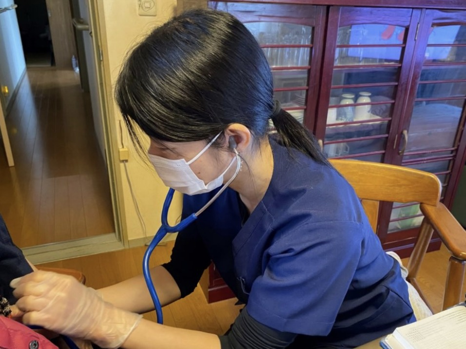
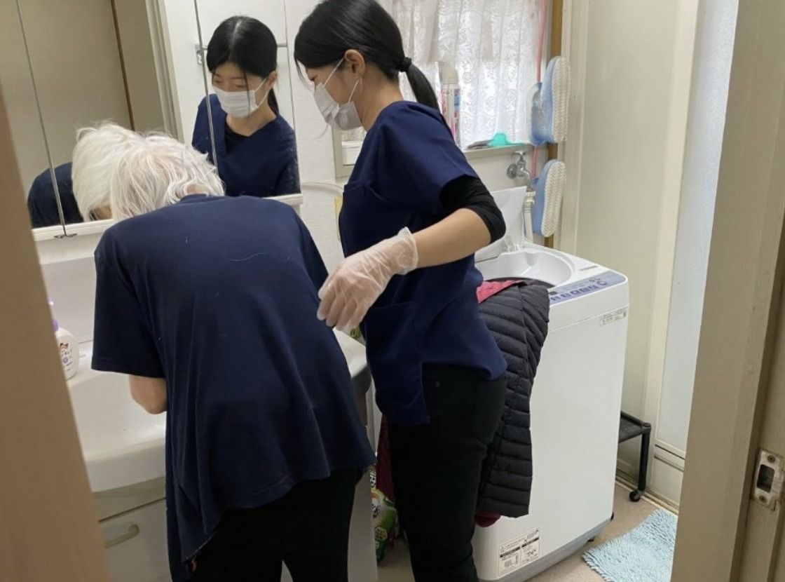
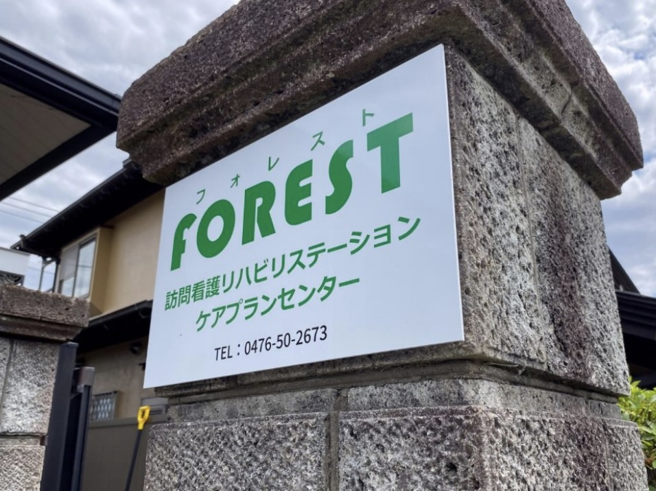
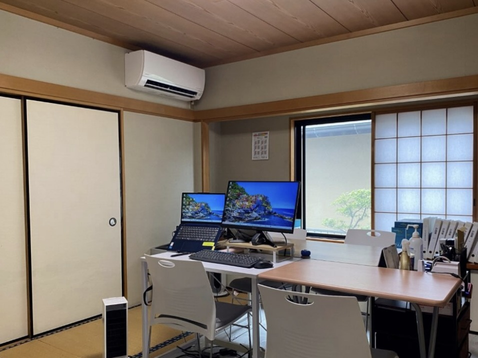
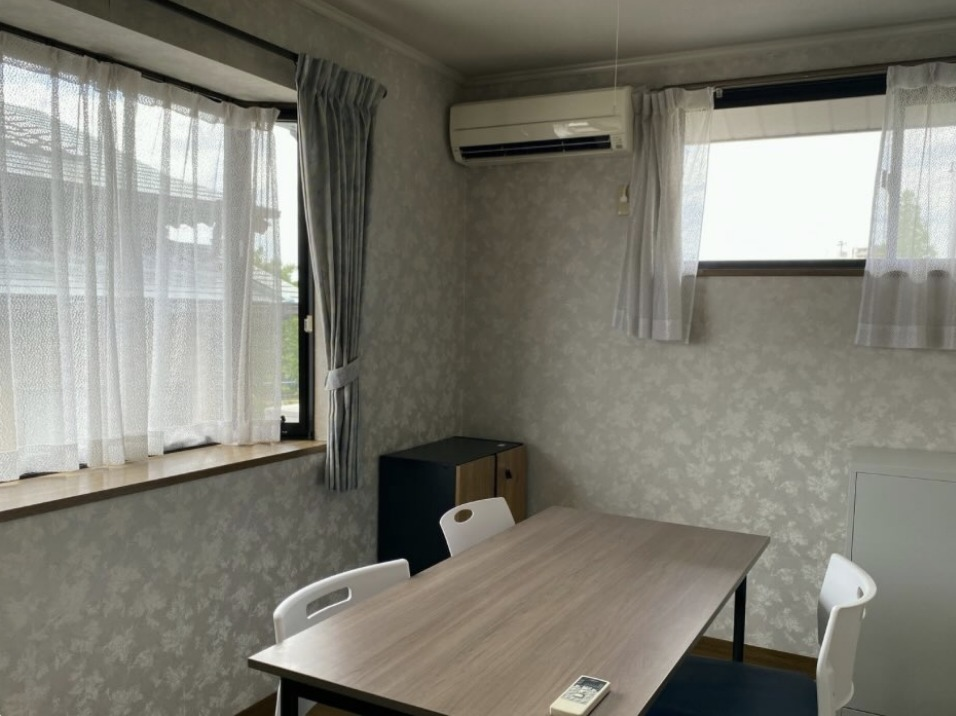

RECRUIT ｜ 千葉県成田市
フォレストは「地域で困っている方をなんとかしたい」をコンセプトに、2023年7月に成田市で開設した訪問看護リハビリステーションです。直行直帰・フレックスタイム推奨。あなたらしい働き方で、在宅を支えませんか。

POINT
朝礼・終礼のために事務所へ集まることはありません。記録や報告書は貸与タブレットでどこでも作成可能。社用車でご自宅から訪問先へ直接向かえます。
経験・年齢ではなく、ご本人の働きぶりで評価します。インセンティブ・祝日出勤手当・昇給賞与あり。土日祝休み、または日祝＋平日1日休みを選べます。
介護保険分野に加え、がん末期・難病・精神疾患・障がい児・児童発達まで。経験豊富なスタッフが指導し、外部研修・資格取得の費用は会社が負担します。

在宅看護が必要なのに十分な支援が届いていない地域や分野へ、積極的にサポートを届けています。おかげさまで多くのご依頼をいただき、増員することになりました。2025年には居宅介護支援事業所と多古サテライトも開設。事業拡大中のため、将来事業所を運営したい方・マネジメントを学びたい方も歓迎です。
ONE DAY
常勤スタッフ（訪問）の一例です。
※ここはサンプルです。実際には御社スタッフの1日の流れに差し替えますタブレットで当日の予定と申し送りを確認。社用車で訪問先へ直接向かいます。
バイタルチェック、医療処置、リハビリ、ご家族への助言など。
昼食補助（チケットレストラン）を使って近くのお店やコンビニで。
訪問の合間に、主治医やケアマネージャーと電話・チャットで連携します。
タブレットでその場で入力。事務所に戻る必要はありません。
17:30以降の訪問がある日は、出勤時間を遅らせて調整します。
MESSAGE
病棟から訪問看護は初めてで不安でしたが、慣れるまで先輩が同行してくれました。困ったときにすぐ相談できる雰囲気が心強いです。
直行直帰なので、子どもの送り迎えと両立できています。時間の使い方を自分で組み立てられるのが気に入っています。
小児から精神、難病まで本当に幅広い方を担当します。毎日が学びで、セラピストとしての引き出しが増えました。
人間関係の良さは入ってみて実感しました。職種の垣根なく意見を出し合えるので、利用者様への支援もスムーズです。
吸引研修会など、看護師さんが講師をしてくれる勉強会があり、訪問が初めてでも安心して現場に出られました。
同じ法人内に訪問看護があるので連携が早いです。利用者様の「家で過ごしたい」を一緒に支えられるのがやりがいです。
Q&A
CONTACT PERSON
人間関係の良さには絶対の自信があります。「まずは話だけ聞いてみたい」「見学してから考えたい」という方も大歓迎です。働き方のご希望も柔軟に対応しますので、お気軽にご連絡ください。
REQUIREMENTS
| 募集職種 | 看護師（正看護師・准看護師）／理学療法士／作業療法士／言語聴覚士／ケアマネージャー サテライト（多古）新規開設スタッフ・将来の幹部候補も同時募集 |
|---|---|
| 雇用形態 | 常勤（正社員）／非常勤（パート） |
| 仕事内容 | 訪問看護ステーションからの訪問看護・訪問リハビリ業務、居宅介護支援業務（ケアマネージャー） |
| 給与 | 正看護師：月給30万円〜 准看護師：月給28万円〜 PT・OT・ST：月給28万円〜 ケアマネージャー：お問い合わせください 非常勤：1件1時間 3,500円（交通費込み）／17:30以降開始の訪問は1件 4,000円 年収例（手当含む）：1年目 450万円／2年目 520万円 |
| 手当・賞与 | インセンティブ（月90時間超過分は1時間3,000円）／祝日出勤手当（1件4,000円）／精神作業療法手当（該当者に2万円）／交通費（2万円まで）／業績・勤務実績により昇給・賞与あり |
| 勤務時間 | 8:45〜17:30 フレックスタイム・直行直帰推奨。17:30以降の訪問がある場合は出勤時間を遅らせます |
| 休日・休暇 | 年間休日128日 土日祝休み、または日祝＋平日1日休みを選択可／年末年始（12/29〜1/3） |
| 福利厚生 | 退職金制度／昼食補助（チケットレストラン）／社用車貸し出し／タブレット貸与／車通勤可 |
| 研修 | 吸引研修会（定期開催）／災害対策研修／感染症対策研修／医療保険・介護保険請求勉強会 外部研修・資格取得費用は会社負担 |
| 勤務地 | 千葉県成田市橋賀台1-9-6（成田駅西口よりバス15分） 多古サテライト：千葉県香取郡多古町間倉544-413 |
| 応募方法 | お電話にてご連絡ください。施設見学も可能です。 |


